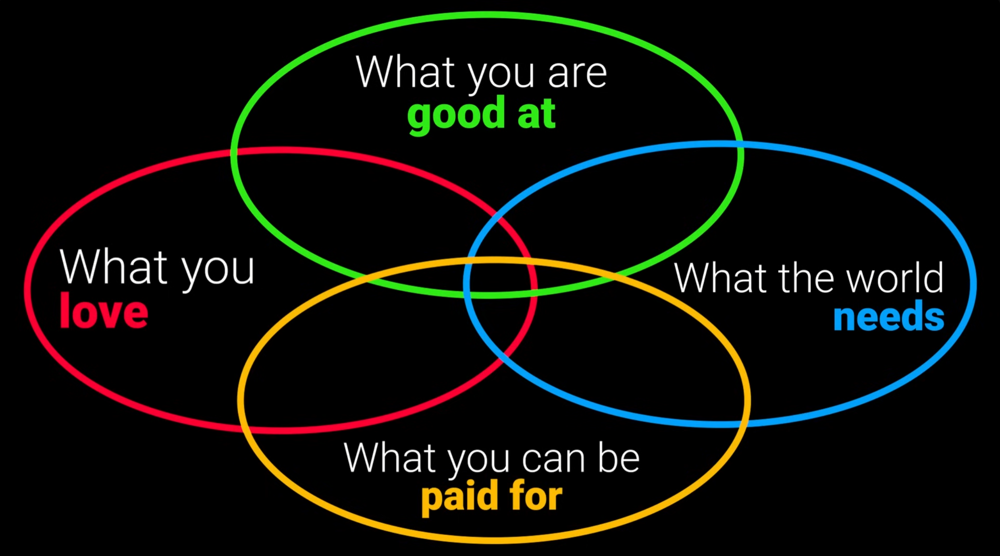
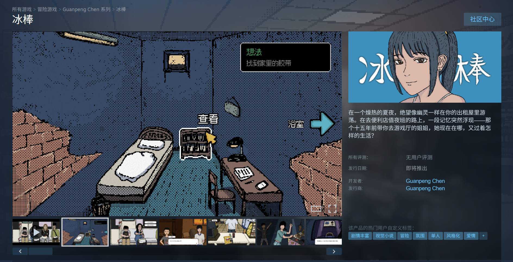

2025年终总结：人生的容错率
全职做独立游戏两年过去了，如果说去年还可以靠着刚开始的冲劲盲目地相信，那么今年就是彻底认清现实的一年。这个现实有好有坏：好的是原来人不上班、负收入两年也不会那么容易饿死；坏的是花费一年半时间做的游戏失败了，而像这样能100%自由地去做的游戏也许只剩下三个。
我人生的容错率在这个时刻变得格外清晰，要想继续自由地活下去，我的选择只有一个：在接下来的三个游戏里至少成功一个。知道了自己已经没有试错的奢侈，一切反倒变得简单了起来——这部分的话，就先留到后面再说了。
那么事不宜迟，按照惯例我们先来看看年度目标的完成情况。
2025年目标完成情况
-
完成并发售《诺亚的困境》（Steam平台） √
已于2025年5月16日在Steam上顺利发售。 -
完成并发售《诺亚的困境》（Switch平台） √
已于2025年7月24日在任天堂eShop上顺利发售。 -
完成并发售《诺亚的困境》原声带（Steam平台） √
已于2025年5月16日在Steam上顺利发售。 -
补完《诺亚的困境》开发日志系列（文章和视频） √
写完了剩下的4篇开发日志，做了2个关联视频，完结撒花。（参照后文【作品】部分） -
完成下一款游戏的原型（这次的体量要控制在6个月可以做完的程度） √
我的下一款游戏，短篇视觉小说《冰棒》的原型已经完成并且公开了Steam商店页面。高强度开发6个月的话应该能把所有内容做完。 -
庆祝《空箱》五周年 with something √
发了周年纪念贴&画了贺图，公开了做周边的意愿，以及“反乌托邦食物三部曲”的构想。第二部已经开始做了。 -
用书影游填满My 100 √
今年消费书影游共140项，超额完成任务！（然而，现在正在考虑要控制一下消费量了。） -
建立一个包含咖啡馆工作与运动环节的routine √
首先是上半年意识到了图书馆（免费）优于咖啡馆（收费），然后就是下半年办了健身房会员卡后开始了每周游泳+健身。于是临近年末总算是建立起了一个完整的routine，甚至还包含了早起的晨读环节。唯一问题是一套流程走下来会非常累，还是需要持续调整强度，以找到一个体力和效率的最佳平衡点。
这么看来2025年似乎很成功，自己想做的事情，基本都做到了，但是可惜世界不是靠努力就一定可以出结果的，如果非要说什么做得好，那就是目标定得挺好的，努力的大方向没有什么问题，靠着这些目标的确度过了充实的一年。
生活
今年的生活可以很清晰地划分为两个阶段：《诺亚的困境》发售之前，以及之后。
在《诺亚的困境》发售之前，生活的目标很简单，就是尽快把游戏做完，于是5月16日之前基本都是一周里有三到四天泡在咖啡馆，不出门的日子也是在家工作。去年养成的跑步习惯，也随着游戏发售日的接近而变得越来越无法坚持，从一周一跑变成了两周甚至三周一跑，最后当然是彻底不跑了（而我在刚刚翻手帐回忆之前甚至都没有注意到这点，看来发售之前真的是忙到无暇顾及运动了）。
这段时间里除了做游戏，我还在豆瓣上找了网友帮我做beta测试，做了最低限度的宣传，以及出了一次展。生活忙归忙，看书看剧的时间还是给自己留了的，现在回想起来那段时间甚至可能是快乐的，毕竟那个时候我还相信《诺亚》有可能成功，万事俱备只差完成，而当时是每天都在一步步接近那个目标。
而在《诺亚》发售之后，除了如约而至的burnout，也由于下个游戏项目尚未决定，生活的节奏一下子就慢了下来。单靠回忆我已经想不起来那段时间自己是怎么过的了，多亏了我今年每周都会在手帐上写的周记，我才知道当时我是在一边消化《诺亚》的失败，一边计划2025年剩下的日子要怎么过。在5月16日到8月4日那段浑浑噩噩的时间里，我靠着仅存的意志力完成并发售了《诺亚》的switch版，并且参加了2025年的GMTK Jam。也是在那段时间里发现了免费的市民图书馆的存在，于是再也没有去过咖啡馆。
在持续4天的GMTK Jam结束后，我发现这次的参加体验并不快乐，而问题出在我自己身上：我只想做自己想做的游戏。于是我根据自己的喜好和能力进行了一次系列性的分析，而下个游戏项目也终于在这个过程中被定了下来。然而，8月之后为了赶上数个活动的ddl，加之又回国了一趟，新游戏《冰棒》的开发一直被打断，直到年底都没有一段可以完全集中的开发时间。8月到12月虽然脱离了低谷，但是体感上一直在被各种身外事拉扯，这段时间里的高光时刻，应该就是下定决心要开始游泳和健身的时候了。11月正式开始健身，每天早起吃早餐，注意饮食与营养，一个月游了15次泳，一周3到4次力量训练，很快就看到自己的身体变得更好看了，精气神也比以前好了。12月要是没有突然生病，2025年应该可以以一个近年来最健康的身体状态收尾。
总的来说，抛开创作上的不顺利，今年的生活和去年比肯定是更好了：买了两个新书架，生活花销更低了（图书馆+高性价比饮食），开始了健身游泳吃早餐。而且今年规划起来也更得心应手了，继续延用了去年养成的习惯，电子用Notion，实体用三本本子：hobonichi weeks 手帐、MD note 每日todo本、MD note 笔记本。不夸张地说，现在的我对自己的生活已经达成了一种病态的掌控，每日todo本就是我的death note，写下的任务必须完成，在手帐上更是既有月目标又有周目标，每周结束时要写周记，每月结束时要写月度回顾（中文&日语），严格遵守自己给自己定下的规矩——即使这些规矩有时候并没有太大意义。
这套规矩虽然略显生硬，但这些年来我确实是靠着它们get things done的，所以如果想要改动，也只有靠着年末辞旧迎新的契机才能说服自己了。接下来我会把自己现在的生活习惯来一个大解构，好的留下坏的剔除或者更改，毕竟就像我在开头说的那样，现在的我已经没有大把的时间可以浪费在和“做一个成功的游戏”无关的地方上了——这听起来很残酷，但“做一个成功的游戏”的过程对于我来说也是快乐的，而只有让自己的收入早日变正，我才能逐渐接近而非远离自己理想的生活，一个不用那么在意“必须做成功的游戏”的生活。
创作
写完生活部分发现其中已经提到了很多创作的内容，现在我的生活确实和创作密不可分，不像上班的时候还可以讲work life balance，现在的我不创作就会饿死，创作就是生活，生活就是创作，work = life。
今年我的创作大事件有下面几个：
- 完成并发售了我辞职后全职做的第一款独立游戏《诺亚的困境》
- 第一次在Nintendo Switch上发售自己的游戏（《诺亚的困境》）
- 第一次经历独立游戏的失败（《诺亚的困境》）
- 在《空箱》五周年之际公布“反乌托邦食物三部曲”构想并着手制作第二部
- 开始做下一款独立游戏《冰棒》并公开了Steam商店页
总的来说，今年和去年一样依旧全年赤字，依旧没有特大喜讯，但不同的是今年我明显地感觉到了自己在做游戏这件事上的成长。去年的成长只是技术上的成长，而今年则是技术、认知、心态的全面成长——《诺亚的困境》除了没有给我带来（足够的）收入，其它的好东西都带来了。所以如果说今年的创作有什么好聊的，那就是：《诺亚》的失败让我学到了什么。
Hindsight is 20/20，如果从现在回头看，可以很清晰地看到《诺亚》的不足之处，而这并不是说《诺亚》作为一个游戏就注定会失败，只是这个世上存在着对我而言更容易成功的项目，但我当时没有找到它。要说明这一点，最直观的方式就是借助独立游戏开发者Jonas Tyroller做的这幅图：

四个颜色的圆圈分别是：红色，你所热爱的；绿色，你所擅长的；黄色，可以赚钱的；蓝色，世界需要的。一个最理想的项目（无论是什么领域），就是能同时满足这四点的项目。换句话说，满足的圆圈越多，这个项目就越容易成功，而成功的逻辑也很简单——热爱能让项目带有独特的感染力、擅长能让项目执行得更好并顺利完成、可以赚钱说明项目存在或者符合市场需求、世界需要能让项目拥有爆发的潜力和超越时间与空间的影响力。所以，作为一个创作者，在立项的时候我们应该尽量寻找能同时满足四个圆圈的项目。
在决定下个游戏做《诺亚》的时候，我并没有考虑到这四个圆圈（这个理论我是在后来观看Jonas Tyroller所制作的关于立项的视频时才知道的）。而《诺亚》充其量只满足1（黄圈）+0.5（绿圈）+0.5（红圈）=2个圆圈：
- 作为辞职后做的第一款游戏，能不能赚钱（黄圈）是我考虑的第一点，所以从最初就定下了以玩法为核心并弱化叙事的立项方向，因为普遍来说，一个以玩法为核心的商业游戏会更有市场。
- 由于是第一次用Unity做商业游戏，也是第一次做以玩法为核心的游戏，虽然我有成功做完和发售商业游戏的经验，但要说擅长（绿色）实在说不上。
- 我最喜欢的游戏类型是叙事游戏，这次没有选择做叙事游戏更多是出于想要尝试的心态而非热爱（红圈），但要说我是不是对《诺亚》的设计和世界观没有爱，那肯定也不是。
- 我立项时没有给到足够重视的，就是这个游戏的世界需要性（蓝圈）。这里的需要性不是市场上而是立意上的，虽然立意好了也有可能带动市场，用一个及其简单的说法来概括就是——你相不相信这个作品做出来可以改变世界。现在看来，《诺亚》可以是一款好游戏，但它能对世界造成的影响微乎其微。
与此相反，我的第上一款也是第一款独立游戏《空箱》，它立项的出发点就是世界需要性。我当时还在上学，完全没有考虑赚钱的问题，做《空箱》就是为了表达一种观点，发出一种我认为社会所需要听到的声音。现在看来，这一点对于独立游戏来说格外重要，可能这就是为什么《空箱》虽然只是红圈+蓝圈，但它要比《诺亚》要更受欢迎。
当然，我认为这个理论主要是能提高《诺亚》的上限，想要把独立游戏当成事业来做，提高下限可能更重要，而下限除了立项很大部分是由宣传决定的。《诺亚》在这方面没做好的是：
- 立项时没有考虑到游戏内容和画面是否易于宣传，导致宣传时缺乏材料。
- 项目公开时太过草率，没有好好把握住这个宣传点。
- Demo公开时因为Demo页面设置失误无法显示，损失了一波重要的平台曝光量。
- 没有持续宣传，没有活用所有宣传手段，导致愿望单积累不足。
- 没有积累到足够的愿望单，导致发售时没有上热门新品榜，失去大量曝光机会。
在一个人做且没有强力发行商帮忙的情况下，宣传确实非常困难，如果不全力去做的话，连及格线都很难达到，做《诺亚》的时候我就是由于过于乐观而松懈了。虽然《诺亚》在商业上失败了，从类型上看也不是我最擅长的，但我还是想说《诺亚》是一个我很满意的游戏，放在众多roguelike游戏里看也是独一无二的，而且也正是因为我知道自己以后不会再做这么纯粹以玩法为核心的游戏了，所以我真心希望能有更多玩家可以玩到它。
总之，在《诺亚》发售之后，因为反响平平，我无法再继续把时间花在更新上（而且游戏内容本身也很完整了），我很快地就开始思考起接下来要做的新游戏。结合上面的分析和圆圈理论，我在纠结许久之后终于从许多的备选中定下了下一个游戏项目，《冰棒》。

《冰棒》是一款以现代中国为背景的视觉小说游戏，这一次我决定彻底拥抱自己所热爱的东西，在宣传上也不遗余力，可以说，《冰棒》是我目前为止最接近四个圆圈中心的游戏。《冰棒》在11月22日公开了Steam商店页面，到现在已经有了300个愿望单，目前看来它获得愿望单的速度是我至今为止的游戏里最快的，我愿意相信这是《诺亚》失败后带来的成长。
重新回到开头那句话——像这样能100%自由地去做的游戏，我也许只剩下三个了。所以从《冰棒》开始，我接下来的每一个游戏都会是叙事游戏，都会是自己在Steam上看到会毫不犹豫买下的游戏，都会是我相信能改变世界（哪怕是在一个极小的范围内）的游戏。宣传方面自然也会不遗余力，不怕丢脸不怕被骂不怕失败，适合找发行商的游戏也会努力去找，毕竟游戏需要玩家，想要真正改变世界，能有越多的人玩到越好。希望大家可以继续支持我！
作品
以下是我今年发表的主要作品：
- 《诺亚的困境》Steam版
- 《诺亚的困境》Nintendo Switch版
- 《诺亚的困境》开发日志#2～#5
- 《诺亚的困境》开发相关视频x2
- 《Life Loop》GMTKJam 2025 参赛作品
- 《冰棒》Steam商店页公开
2026年目标
以下是我2026年的主要目标：
- 完成《冰棒》的开发
- 发布《冰棒》DEMO
- 如果《冰棒》能获得足够愿望单的话考虑发售（最晚延期到2027）
- 公开未公开反乌托邦游戏Steam商店页（最晚延期到2027）
- 完成未公开反乌托邦游戏DEMO并寻找发行商
- 完成第三个新游戏的DEMO
除了上述我认为必须完成的目标外，当然还有各种次级目标或者说想尝试的东西，比如说每周游泳3次、每周抽一天研究3D、工作日每天早起去图书馆、工作日不看剧和电影、好好经营SNS、再次挑战进军油管等等，不写进上面是为了让自己可以视情况灵活放弃，规避自己“写下就要完成”的强迫症。
结语
2025年结束，21世纪的四分之一就这样过去了。作为一个出生在千禧年以前的人，站在2026年的起点，确实有一种望向浩瀚宇宙的渺小感——世纪的节点和宇宙的辽阔如此相似，都在提醒我人生的喜怒哀乐在世界看来不过是沧海一粟。新的一年，我想带着这种解脱感赋予的勇气创作，把每一个作品，都当作我对世界最后的呐喊。
最后，祝所有读到这里的朋友新年快乐，愿你拥有健康、勇气和自由。
GP
2026.1.6
于日本藤泽